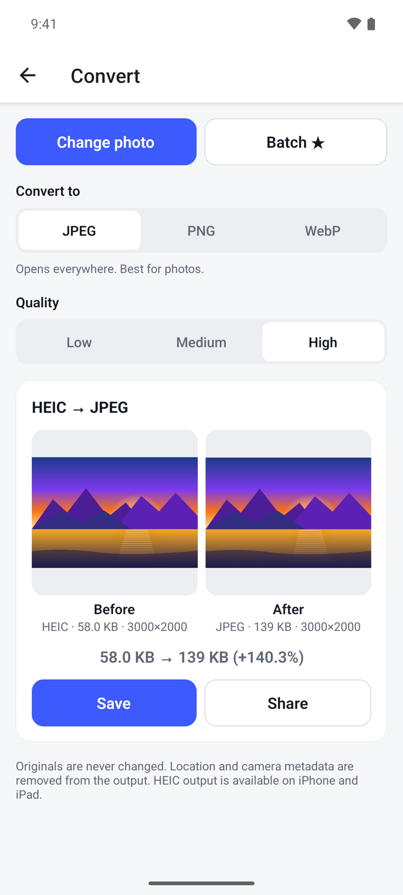
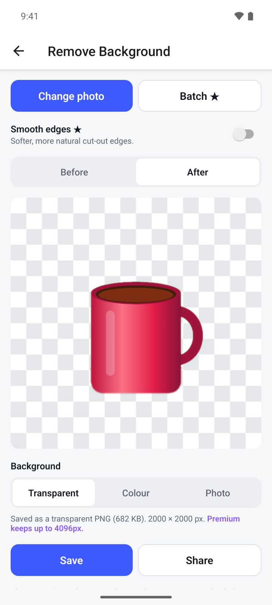

Apa yang boleh dilakukan
Photo & Image Toolkit menghimpunkan lima alat foto harian dalam satu aplikasi: mampat, ubah saiz dan pangkas, tukar format, kolaj, dan buang latar belakang. Setiap alat berfungsi dalam telefon anda dan menyimpan salinan baharu, jadi foto asal anda tidak pernah diubah. Aplikasi ini tersedia dalam 14 bahasa dan mengikut bahasa telefon anda.
- Tiada akaun. Foto diproses pada peranti anda dan tidak pernah dimuat naik.
- Aplikasi hanya melihat foto yang anda pilih.
- Maklumat lokasi dan kamera dibuang daripada salinan yang disimpan.
- Percuma dengan iklan. Pembelian Premium sekali sahaja membuang iklan dan menambah pemprosesan kelompok.
Mulakan
- Buka Photo & Image Toolkit. Skrin utama memaparkan lima alat.
- Ketik satu alat, contohnya Compress.
- Ketik Select photo dan pilih sekeping foto. Aplikasi tidak meminta akses kepada seluruh galeri foto anda.
- Apabila hasilnya siap, ketik Save untuk menyimpannya sebagai foto baharu, atau Share untuk menghantarnya ke aplikasi lain.

Mampatkan foto
- Pada skrin utama, ketik Compress, kemudian Select photo.
- Di bawah Quality, pilih Low, Medium atau High. Low menghasilkan fail paling kecil.
- Di bawah Output format, pilih JPEG atau WebP.
- Jika fail mesti kekal di bawah saiz tertentu, taip saiz itu dalam Target size (optional), dalam KB.
- Ketik Compress. Anda akan melihat foto sebelum dan selepas, dengan saiz asal, saiz baharu dan jumlah yang dijimatkan.
- Ketik Save atau Share.

Jika saiz sasaran tidak dapat dicapai tanpa kehilangan kualiti yang ketara, aplikasi akan memberitahu anda dan memberikan hasil yang paling kecil.
Ubah saiz, pangkas, putar atau balikkan
- Ketik Resize & Crop, kemudian Select photo.
- Di bawah Crop ratio, kekalkan Free atau pilih bentuk tetap seperti 1:1, 4:5 atau 16:9.
- Seret di dalam kotak pangkas untuk menggerakkannya. Seret titik biru di sudutnya untuk membesarkan atau mengecilkannya.
- Ketik ⟲ Left atau ⟳ Right untuk memutar foto. Ketik butang Flip untuk membalikkannya seperti cermin.
- Di bawah Resize, pilih Original untuk mengekalkan saiz, Pixels untuk menaip lebar, % untuk mengubah skala mengikut peratus, atau Presets untuk saiz siap pakai bagi media sosial dan dokumen.
- Di bawah Format, pilih JPEG, PNG atau WebP.
- Semak baris Output untuk saiz akhir, kemudian ketik Apply.
- Ketik Save atau Share.

Tukar kepada JPEG, PNG atau WebP
- Ketik Convert, kemudian Select photo. Foto HEIC, PNG, WebP dan JPEG boleh dibuka.
- Di bawah Convert to, pilih JPEG, PNG atau WebP. Nota ringkas di bawah butang menerangkan kegunaan setiap format.
- Untuk JPEG dan WebP, pilih Quality: Low, Medium atau High.
- Ketik butang Convert to di bahagian bawah kad, contohnya Convert to JPEG.
- Bandingkan saiz sebelum dan selepas, kemudian ketik Save atau Share.

Jika foto mempunyai kawasan lut sinar dan anda memilih JPEG, aplikasi akan memberi amaran bahawa kawasan itu akan menjadi putih.
Buat kolaj
- Ketik Collage, kemudian Select photos. Pilih 2 hingga 9 foto.
- Untuk menukar susunan, ketik satu foto dalam pratonton, kemudian ketik foto yang hendak ditukar tempatnya.
- Di bawah Layout, pilih cara foto disusun. Susun atur yang bertanda ★ adalah sebahagian daripada Premium.
- Di bawah Shape, pilih 1:1, 4:5, 9:16 atau 16:9.
- Tetapkan Spacing antara foto, Corners (Square, Soft atau Round) dan warna Background.
- Di bawah Format, pilih JPEG atau PNG.
- Ketik Create collage, kemudian Save atau Share.

Buang latar belakang
- Ketik Remove Background, kemudian Select photo. Aplikasi terus memotong subjek. Ia paling sesuai untuk satu subjek yang jelas: orang, haiwan peliharaan atau produk.
- Ketik Before dan After untuk membandingkan hasil potongan dengan gambar asal.
- Di bawah Background, pilih apa yang diletakkan di belakang subjek:
- Transparent: disimpan sebagai PNG lut sinar.
- Colour: pilih salah satu warna yang dipaparkan.
- Photo: ketik Choose background photo dan pilih foto lain.
- Ketik Save atau Share.

Dengan Premium, anda juga boleh meletakkan subjek pada latar gradien.
Potongan dibuat pada peranti anda. Kali pertama anda menggunakan alat ini, telefon anda mungkin perlu dalam talian seketika untuk mengambil model potongan melalui perkhidmatan Google Play.
Buka Settings
- Pada skrin utama, ketik Settings di penjuru kanan atas.
- Di bawah Premium, lihat sama ada anda menggunakan Free atau Premium, ketik Upgrade to Premium, atau ketik Restore purchases.
- Di bawah Privacy, buka Privacy Policy atau Terms of Use. Di sesetengah negara anda juga akan melihat Ad privacy choices, tempat anda boleh menukar persetujuan iklan anda.
Premium
Premium ialah satu bayaran sahaja, bukan langganan. Ketik ★ Go Premium pada skrin utama, atau Upgrade to Premium dalam Settings. Ia memberikan anda:
- Tiada iklan.
- Pemprosesan kelompok dengan butang Batch: mampat atau tukar sehingga 20 foto sekali gus, atau potong sehingga 10 foto. Anda juga boleh mengubah saiz banyak foto sekali gus.
- Eksport resolusi tinggi: sehingga 8192 px pada sisi terpanjang berbanding 4096 px, sehingga 4096 px berbanding 2048 px untuk potongan, dan kolaj yang lebih besar.
- Smooth edges untuk tepi potongan yang lebih lembut dalam Remove Background, serta templat latar belakang gradien.
- Susun atur kolaj tambahan.
Jika anda pernah membeli Premium, ketik Restore purchases dalam Settings atau pada skrin Premium.
Soalan lazim
Adakah foto asal saya berubah? Tidak. Setiap alat menyimpan salinan baharu. Pada Android, salinan disimpan dalam album Photo Toolkit dalam galeri anda.
Adakah foto saya dimuat naik? Tidak. Kelima-lima alat berjalan dalam telefon anda, termasuk pembuangan latar belakang.
Mengapakah foto yang disimpan lebih kecil dalam piksel berbanding foto asal? Versi percuma menyimpan foto sehingga 4096 px pada sisi terpanjang, dan potongan sehingga 2048 px. Foto yang lebih besar dikecilkan. Premium menaikkan had ini.
Bolehkah saya menyimpan sebagai HEIC? Tidak pada Android. Anda boleh membuka foto HEIC dan menukarnya kepada JPEG, PNG atau WebP.
Pembuangan latar belakang menunjukkan ralat. Apa yang boleh saya lakukan? Alat ini memerlukan perkhidmatan Google Play. Pastikan anda dalam talian dan Google Play telah disediakan pada telefon anda, kemudian cuba lagi.
Privasi
Foto anda diproses pada peranti anda dan tidak pernah dimuat naik. Versi percuma memaparkan iklan daripada Google AdMob. Baca dasar privasi yang penuh.